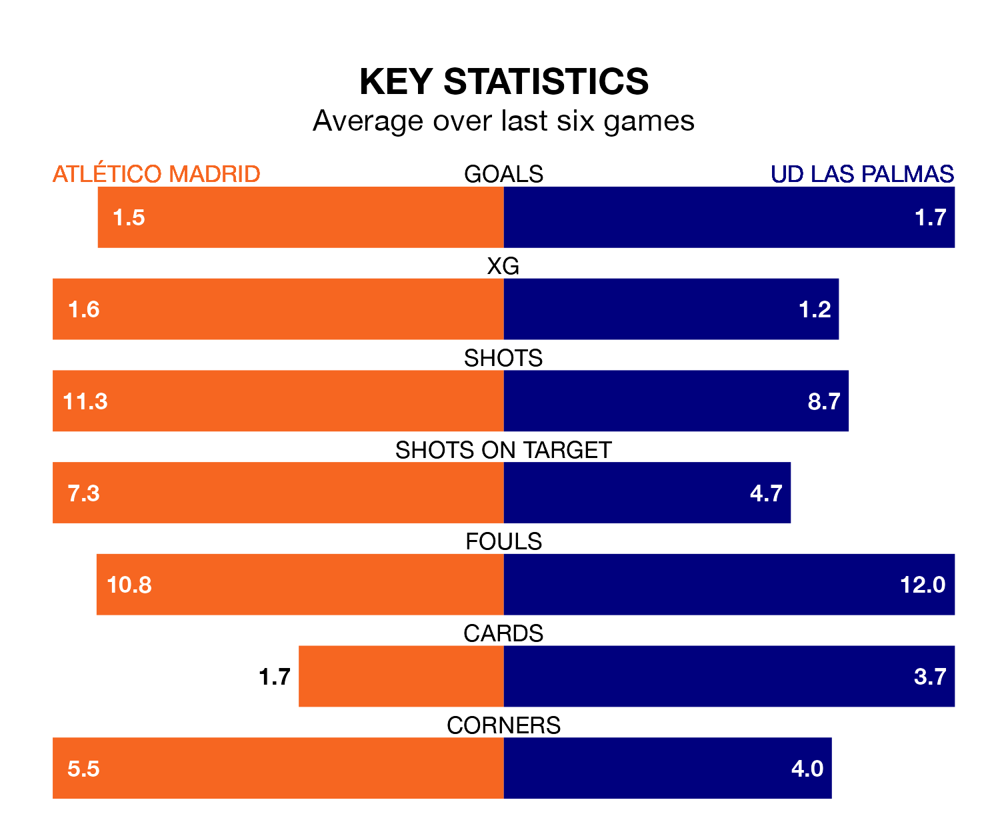

Atlético Madrid host UD Las Palmas in Saturday lunchtime's match at the Estádio Cívitas Metropolitano looking to bounce back from defeat last time out in La Liga.
Atlético, who sit fourth in the league after 24 games, fell to a 1-0 away defeat to Sevilla on February 11.
They face a Las Palmas side who picked up a win in their last match, a 2-0 victory against Valencia CF, and who sit eighth in the table.
With 45 goals in 24 games so far this season, Atlético are scoring more than average in the league with 1.9 goals per game. And they are conceding fewer than average, letting in 26 goals at a rate of 1.1 per game.
Las Palmas, meanwhile, are below average scorers, with 1.0 goal per game, compared to a league average of 1.3. They have conceded 0.8 goals per game.
In the last 10 years, Atlético and Las Palmas have played each other on nine occasions. Atlético won seven of them and Las Palmas two.
On average, Atlético scored 2.6 goals and Las Palmas 0.7 in those matches.
Their last meeting was on November 3, when Las Palmas won 2-1 at home.
In Alvaro Morata, the hosts have one of the league's most on-form strikers so far this season. He has notched 13 goals in 22 appearances, to sit fourth in the scoring charts.
His goal rate of one every 114 minutes is much quicker than that of Kirian Rodríguez, the away team's top scorer with a goal every 391 minutes, and a total of five goals in 23 games.
Atlético are in mixed form in La Liga, with three wins and a draw from their last six games.
And also with three wins and a draw over that period, Las Palmas's form is identical – they have both taken 10 points from 18.
Updated: 13:30 (UTC), 12/02/24